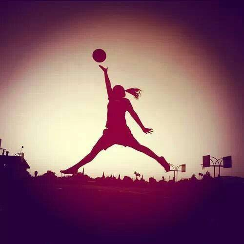
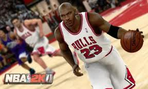

Basquetball

Historia del baloncesto
El baloncesto nació como una respuesta a la necesidad de realizar alguna actividad deportiva durante el invierno, en la escuela de YMCA en Massachusetts. Al profesor de la Universidad de Illinois (Massachusetts)James Naismith, (un profesor de educación física) le fue encargada la misión, en 1891, de idear un deporte que se pudiera jugar bajo techo, pues los inviernos en esa zona dificultaban la realización de alguna actividad al aire libre.
Naismith analizó las actividades deportivas que se practicaban en la época, cuya característica predominante era la fuerza o el contacto físico, y pensó en algo suficientemente activo, que requiriese más destreza que fuerza y que no tuviese mucho contacto físico. El canadiense recordó un antiguo juego de su infancia denominado "duck on a rock" (El pato sobre una roca), que consistía en intentar alcanzar un objeto colocado sobre una roca lanzándole una piedra. Naismith pidió al encargado del colegio unas cajas de 50 cm. de longitud pero lo único que le consiguió fueron unas canastas de melocotones, que mandó colgar en las barandillas de la galería superior que rodeaba el gimnasio, a una altura determinada.
Un partido debe ser dirigido por tres árbitros, uno principal y dos auxiliares. Estos serán asistidos desde la mesa de anotadores, cronometradores y un comisario técnico. Los árbitros y sus ayudantes dirigirán el juego de acuerdo con las reglas e interpretaciones oficiales. El árbitro principal decidirá en cualquier situación de discrepancia entre árbitros auxiliares, mesa de anotadores, dudas de validez en las canastas, dará su aprobación al acta, es el responsable de verificar, inspeccionar y aprobar todos los elementos técnicos y podrá tomar decisiones sobre situaciones no reglamentadas ni regladas. Los árbitros se pueden comunicar con la mesa de anotadores y con el resto de árbitros mediante la gesticulación, señalizando las incidencias con una serie de señales preestablecidas.
Violaciones
Una violación es una infracción de las reglas de juego, penalizada con un saque de fondo o banda para el equipo contrario desde el punto más cercano al de la infracción. Violaciones más comunes:
Pasos (Art.25)
El avance ilegal (pasos) es un desplazamiento ilegal de un jugador con control de balón (el balón reposa sobre una o ambas manos del jugador). Se produce avance ilegal cuando, una vez establecido el pie de pivote, el jugador:
•Lo levanta para iniciar un regate. Denominados comúnmente pasos de salida o arrancada. (No sancionables en baloncesto NBA).
•Estando con ambos pies (incluido el de pivote) en contacto con el suelo, salta y, antes de realizar un pase o tiro a canasta, vuelve a tocar con un pie en el suelo.
•Estando en movimiento, y saltando sobre el pie de pivote, da dos apoyos más, independientemente del orden de los pies.
•Desliza voluntaria o involuntariamente el pie de pivote por el suelo creando una ventaja, el gesto de pivotar no se considera deslizar.
Es legal que un jugador caiga al suelo y resbale mientras sostiene el balón, o que obtenga el control del balón mientras esté tumbado o sentado en el suelo.
• Es una violación si, después, el jugador rueda o intenta levantarse mientras sostiene el balón.
Dobles (Art.24)
Los dobles es una falta por acompañar el balón al botar.Acostumbra a pasar cuando el jugador hace dos pasos y bota el balón.
Pie
Un jugador no debe tocar el balón con el pie intencionadamente. Este acto se considera violación. Aunque también se considera violación si es sin intención de tocar el balón, y se sanciona de la misma manera, saque de banda para el equipo contrario del que ha tocado el balón.
3 segundos en Zona (Art.26)
No se puede permanecer más de 3 segundos en el área restringida del equipo contrario cuando se está atacando. En caso de que estés defendiendo se puede estar en la zona el tiempo que quieras.
Esta es una de las mayores diferencias entre el reglamento FIBA y NBA. En la liga norteamericana no se le permite al jugador defensivo permanecer en la zona pintada, a menos que esté marcando a un jugador atacante.
Salvo excepciones:
•El jugador intente abandonar la zona restringida.
•El jugador esté realizando un regate a canasta transcurridos 3 segundos.
•Un jugador de su mismo equipo esté en acción de tiro a canasta.
E-mail
Cómo se juega
Duración de un partido: En la FIBA, según su reglamento el partido está compuesto por cuatro períodos de 10 minutos cada uno. En la NBA la duración de cada período es de 12 minutos, y en NCAA se juegan dos períodos de 20 minutos cada uno. Si el partido finaliza con empate entre los dos equipos, deberá jugarse una prórroga de 5 minutos más. Y así sucesivamente hasta que un equipo gane el partido.
Jugadores: El equipo presentado al partido está formado por 12 jugadores como máximo. 5 formarán el quinteto inicial y los otros 7 serán los suplentes. El entrenador podrá cambiar a los jugadores tantas veces como desee aprovechando interrupciones en el juego, salvo en las categorías escolares hasta infantiles (edad de 13 a 14 años) que todos los jugadores del equipo deben jugar como mínimo un periodo durante los tres primeros, pudiendo en el último hacer sustituciones.
Inicio del partido: Debe colocarse un jugador de cada equipo dentro del círculo central con un pie cerca de la línea que divide el terreno de juego en dos mitades, situado cada uno de ellos en su campo. Los demás jugadores deben estar fuera del círculo. El árbitro lanza la pelota hacia arriba desde el centro del círculo y los dos jugadores saltan verticalmente para intentar desviarla, sin cogerla, hacia algún compañero de su equipo.
El balón
El balón de baloncesto debe ser, evidentemente, esférico, de cuero o piel rugosa, o material sintético, que facilite el agarre de los jugadores aún con las manos sudadas (los balones tienen una superficie con 9.366 puntos). Tradicionalmente es de color naranja, con líneas negras, pero hay muchas variantes. Las pelotas de indoor (pabellón cubierto) y de outdoor (exterior) difieren en el material del cual están recubiertas.
A partir de la temporada 2004-05 la FIBA ha adoptado para sus competiciones una pelota con bandas claras amarillas sobre el clásico color de fondo naranja, para mejorar la visibilidad de la pelota tanto por parte de los jugadores como por el público.
Desde el año 2007 en España se utiliza un balón con franjas negras, sobre el que se discute su duración ya que resbala en exceso.


El baloncesto, basquetbol o básquetbol (del inglés basketball; de basket, 'canasta', y ball, 'pelota'),Nota 1 o simplemente básquet,1 es un deporte de equipo que se puede desarrollar tanto en pista cubierta como en descubierta, en el que dos conjuntos de cinco jugadores cada uno, intentan anotar puntos, también llamados canastas o dobles y/o triples introduciendo un balón en un aro colocado a 3,05 metros del suelo del que cuelga una red, lo que le da un aspecto de cesta o canasta.
Las federaciones nacionales de los países hispanohablantes del Caribe y Centroamérica, México, Colombia, Venezuela, España y Guinea Ecuatorial, lo denominan baloncesto. Las federaciones nacionales de los demás países sudamericanos de habla hispana lo denominan básquetbol.2 La Asociación panamericana (FIBA) utiliza en español la denominación baloncesto, mientras que la Asociación sudamericana (ABASU) utiliza la denominación básquetbol. También es llamado basquetbol (sin tilde)Nota 2 o básquet, sobre todo en la Argentina y Perú, por la castellanización de su nombre original en inglés: basketball.3
Fue inventado por James Naismith, un profesor de educación física, en diciembre de 1891 en la YMCA de Springfield, Massachusetts, Estados Unidos. Se juega con dos equipos de cinco personas, durante 4 períodos o cuartos de 10 (FIBA)4 o 12 (NBA) minutos cada uno. Al finalizar el segundo cuarto, se realiza un descanso, normalmente de 15 a 20 minutos según la reglamentación propia del campeonato al cual el partido pertenezca.
También existe una modalidad, fundamentalmente para discapacitados, en la que se juega en silla de ruedas (baloncesto en silla de ruedas), prácticamente con las mismas normas que el baloncesto habitual.
Principales reglas del baloncesto
James Naismith diseñó un conjunto de trece reglas para el incipiente deporte. Estas eran:
1. El balón puede ser lanzado en cualquier dirección con una o ambas manos.
2. El balón puede ser golpeado en cualquier dirección con una o ambas manos, pero nunca con el puño.
3. Un jugador no puede correr con el balón. El jugador debe lanzarlo desde el lugar donde lo toma.
4. El balón debe ser sujetado con o entre las manos. Los brazos o el cuerpo no pueden usarse para sujetarlo.
5. No se permite cargar con el hombro, agarrar, empujar, golpear o zancadillear a un oponente.
6. Se considerará falta golpear el balón con el puño, las violaciones de las reglas 3 y 4, y lo descrito en la regla 5.
7. Si un equipo hace tres faltas consecutivas (sin que el oponente haya hecho ninguna en ese intervalo), se contará un punto para sus contrarios.
8. Los puntos se conseguirán cuando el balón es lanzado o golpeado desde la pista, cae dentro de la canasta y se queda allí. Si el balón se queda en el borde y un contrario mueve la cesta, contará como un punto.
9. Cuando el balón sale fuera de banda, será lanzado dentro del campo y jugado por la primera persona en tocarlo.
10. El árbitro auxiliar, "umpire", sancionará a los jugadores y anotará las faltas, avisará además al "referee" (árbitro principal, véase el siguiente punto) cuando un equipo cometa tres faltas consecutivas.
11. El árbitro principal, "referee", jugará el balón y decide cuando está en juego, dentro del campo o fuera, a quién pertenece, y llevará el tiempo. Decidirá cuando se consigue un punto, llevará el marcador y cualquier otra tarea propia de un árbitro.
12. El tiempo será de dos mitades de 15 minutos con un descanso de 5 minutos entre ambas.
13. El equipo que consiga más puntos será el vencedor.